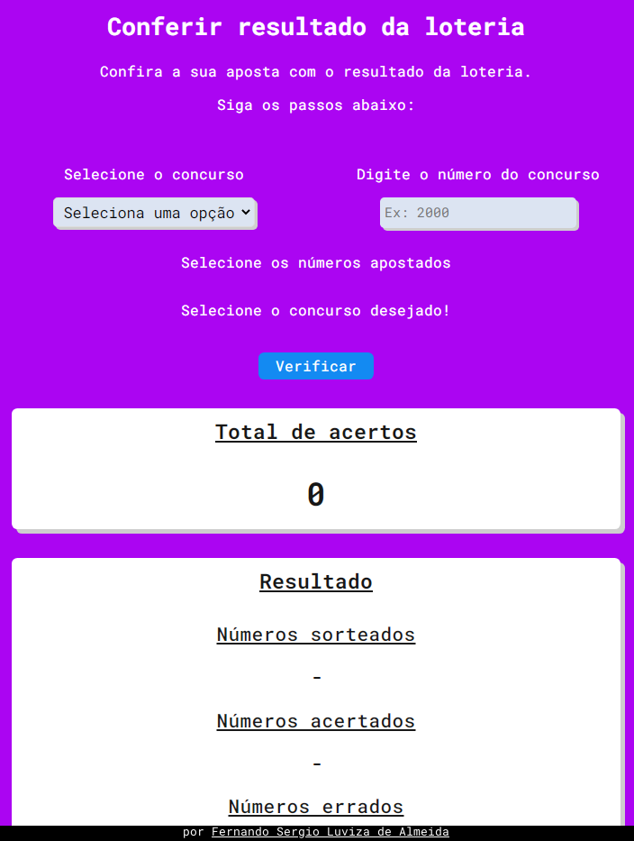

Verificar resultado da loteria
Esse site faz uma comparação do resultado oficial da loterias caixa com a sua aposta.
Foi utilizado:
Desenvolvedor web front-end e back-end
Esse site faz uma comparação do resultado oficial da loterias caixa com a sua aposta.
Foi utilizado:
Eu desenvolvi esse site para ampliar meu conhecimentos com novas tecnologias, tem a função de mostrar, adicionar e excluir dados em um banco de dados através de uma API por queryString.
Foi utilizado:
Esse site faz a função de um Relógio de Pomodoro.
Os tempos de trabalho e descanso podem ser alterados de acordo com o desejado.
Foi utilizado:
Esse site permite escolher os valores desejados da propriedade border-radius e retorna um codigo de compatibilidade com webkit, gecko e css.
Foi utilizado: